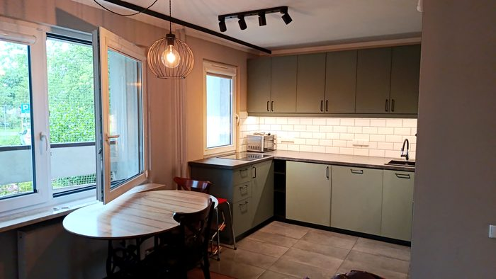
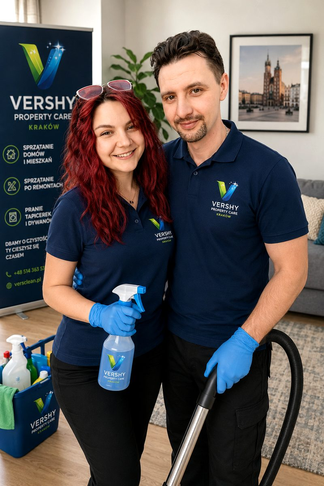
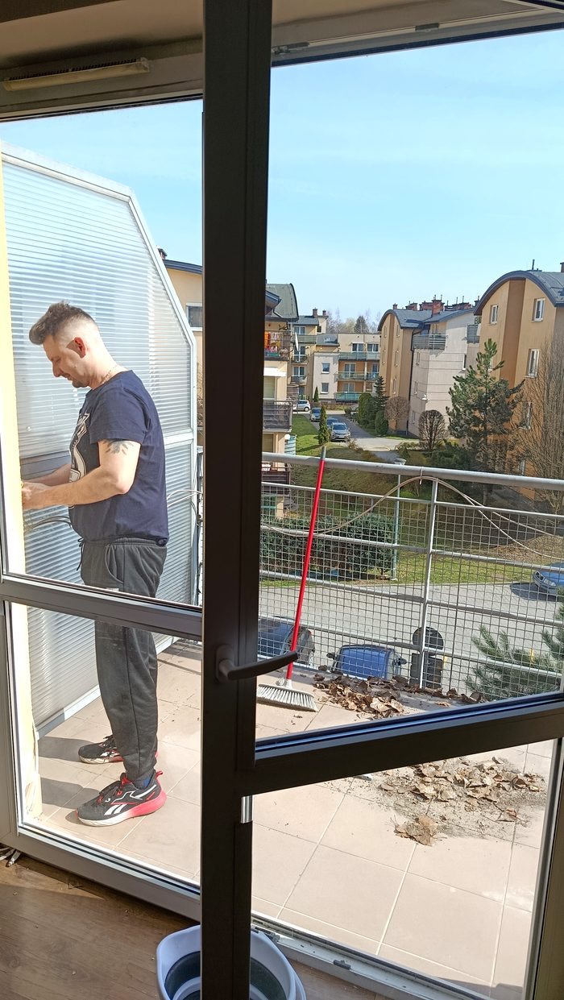
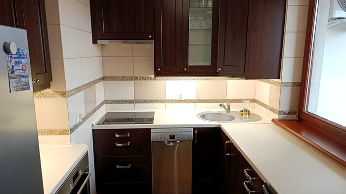
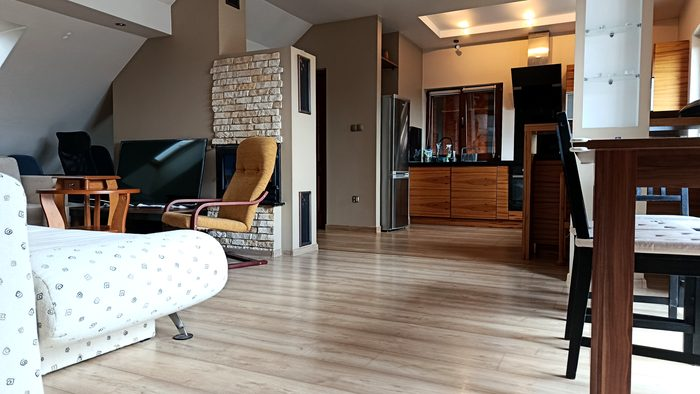
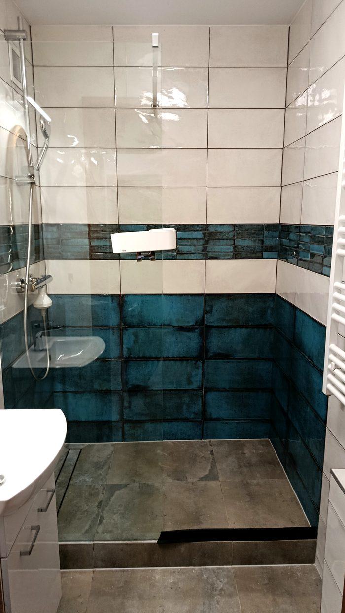
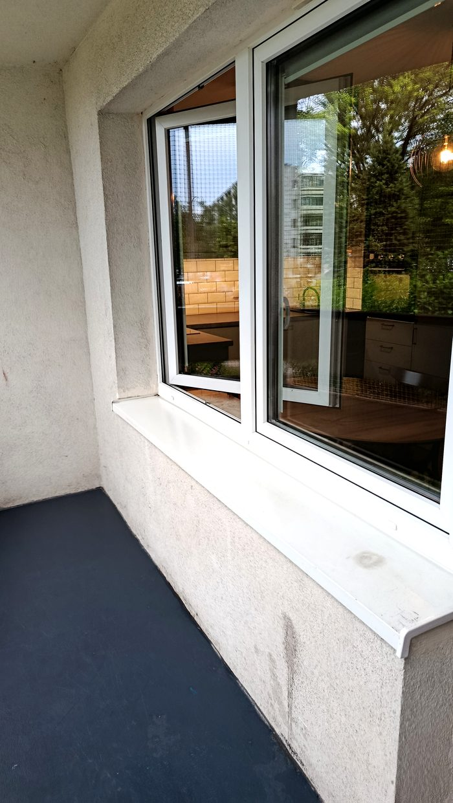
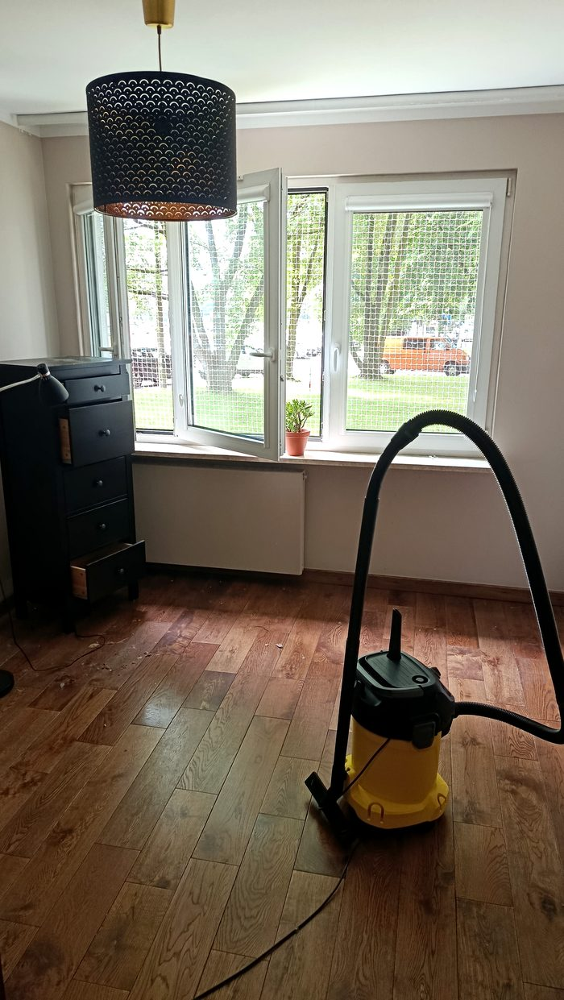

Vershy Property CarePremium Cleaning & Property Services

Sprzątamy z pasją i odpowiedzialnością. Każdy obiekt traktujemy jak własny dom.
📋 Zamów sprzątanieJesteśmy Olena i Volodymyr — małżeństwo z Krakowa. Mała rodzinna firma, za którą stoją prawdziwi ludzie z prawdziwym doświadczeniem.
Olena przez ponad trzy lata pracowała w sprzątaniu hoteli i apartamentów. Volodymyr — w logistyce z profesjonalną chemią i sprzętem. Wiemy, jak dobierać środki do każdej powierzchni, jak pracować profesjonalnym sprzętem i dlaczego szczegóły mają znaczenie.
Zdecydowaliśmy założyć VershClean, bo widzieliśmy, jak wygląda sprzątanie robione byle jak. Chcieliśmy zaproponować coś innego — serwis, w którym liczy się jakość i zaufanie, a nie ilość zleceń.
Każdy klient to człowiek, który zdecydował nam zaufać. Tego nie możemy zawieść. Profesjonalny cleaning to nie "po prostu posprzątanie kurzu" — to dbałość o każdy detal, który klient może zauważyć lub nie, ale który i tak robimy dobrze.
Używamy certyfikowanej chemii i profesjonalnego sprzętu. Jeśli coś umknęło — wrócimy i poprawimy bezpłatnie. Przy większych zleceniach pracujemy z zaufanymi partnerami, za których odpowiadamy własną reputacją.
Wpuszczasz nas do swojego domu. Traktujemy to poważnie.

Bez inscenizacji — tak wygląda nasza codzienna praca.






Rozliczamy się za efekt. Każdy kąt, każda powierzchnia — robimy dobrze, nawet jeśli nikt tego nie zauważy.
Każdy klient, który nam zaufał, nie może być zawiedziony. To nie slogan — to zasada, na której zbudowaliśmy firmę.
Używamy certyfikowanych środków dobranych do każdej powierzchni oraz profesjonalnego sprzętu. Certyfikaty dostępne na życzenie.
Jeśli coś umknęło naszej uwadze — wrócimy i poprawimy bezpłatnie. Wszyscy jesteśmy ludźmi, ale za jakość odpowiadamy zawsze.
Wystawiamy faktury — bez VAT (zwolnienie z art. 113 ust. 1). Prosta, przejrzysta dokumentacja dla klientów indywidualnych i firm.
Stale podnosimy kwalifikacje i poszerzamy ofertę. Rośniemy powoli, bo jakość jest ważniejsza niż tempo.
Nie — środki czystości są wliczone w cenę. Przywozimy wszystko, czego potrzebujemy.
Czas zależy od powierzchni i zakresu. Przy wycenie podajemy orientacyjny czas realizacji.
Tak. Wielu klientów zostawia nam klucze lub kod do zamka. Pracujemy z pełnym zaufaniem.
Tak, pracujemy 7 dni w tygodniu, w tym w soboty i niedziele.
Wystarczy przesłać zdjęcia mieszkania — wyceniamy bezpłatnie i odpisujemy w ciągu kilku godzin.
Tak. Specjalizujemy się w sprzątaniu po remontach — usuwamy pył, resztki materiałów i przygotowujemy obiekt do zamieszkania.
Bezpłatna wycena po zdjęciach. Odpisujemy w ciągu kilku godzin.